01 · 文字按钮
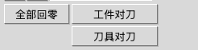
用文字说明动作，例如“全部回零”。
需要的样子：平时、鼠标移上去、按住、键盘定位、不能点击。
这份资料给负责界面外观的设计师使用。每个区域都说明：它放在哪里、操作员拿它做什么、有哪些不同的样子需要设计。
“控件”就是屏幕上的按钮、输入框、开关等小部件。截图用于看清现有内容，颜色、字体和排版可以重新设计。目前是演示界面，点击机床按钮不会真的带动设备。
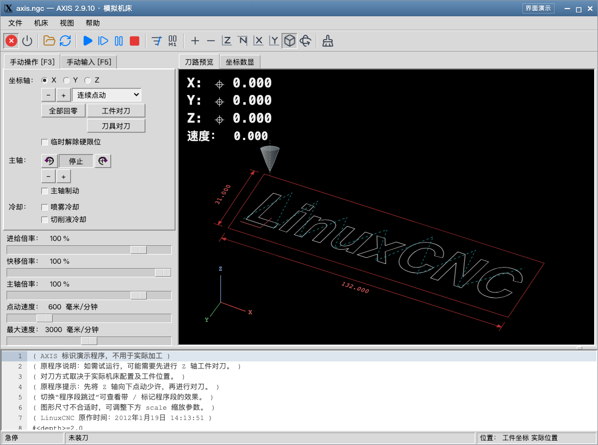
轴名是几个运动方向的名称；字母加数字可能是工件坐标的编号，也可能是机床指令；菜单右侧的字母是键盘快捷键。设计时保留这些内容的位置和可读性即可。
图中软件名称、示例文件名及示例图案仍保留原样。正文已用中文解释，不需要设计师读代码。
这一部分相当于操作台的总面板，用来找到功能、打开文件、开始或停止加工。
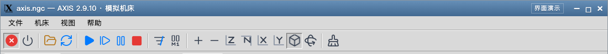
最上方是窗口名称，中间是功能菜单，下面一排是常用按钮。
| 画面上的名称 | 操作员用它做什么 | 设计时要表达什么 |
|---|---|---|
| 文件、机床、视图、帮助 | 按事情的类型查找功能。菜单展开后还能继续选择。 | 区分菜单标题、普通条目、已勾选条目和更多选项的箭头。 |
| 急停、机床使能／关闭 | 急停表示进入紧急停止状态；机床使能表示允许机床工作。 | 两种按钮要明显区分。机床使能不能画成关闭整个软件。 |
| 打开、重新加载 | 选择要加工的文件，或重新读取当前文件。 | 两个动作分别配图标；鼠标移上去时显示中文说明。 |
| 运行、单段运行、暂停／继续、停止 | 控制加工程序的执行过程。“单段运行”是一次执行一段。 | 运行、暂停和停止易于辨认；暂停与继续使用同一位置，分别画出状态。 |
| 放大、缩小、切换视角、平移／旋转 | 改变右侧刀路图的观察方式。 | 当前视角要有选中标记；观察图形的按钮与加工按钮分组。 |
尺寸参考：标题栏高 29 像素，菜单栏高 26 像素，常用按钮栏高 39 像素。按钮为 29 × 29 像素，图标最大 24 × 24 像素。新设计可以调整。
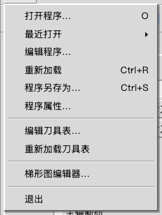
一行一个功能，横线分组，右侧位置可显示键盘快捷键。
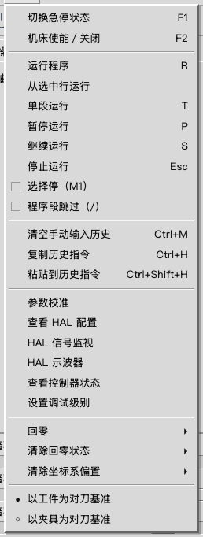
包含加工、回零和设备检查功能；长菜单需要能上下滚动。
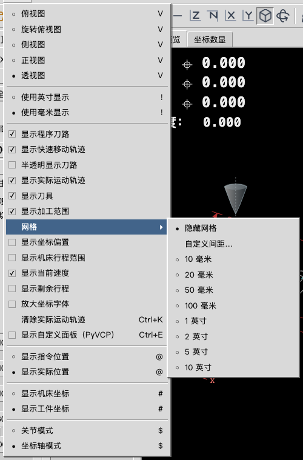
点击带箭头的项目后，旁边展开下一组选项。
用于手动移动机床，并确定机床、工件和刀具的位置基准。
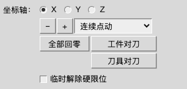
先选要操作的轴，再使用这一组按钮。当前截图里选中了第一项。
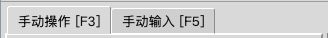
像文件夹标签一样，点击一个标题，下面显示对应内容。
| 画面上的名称 | 操作员用它做什么 | 设计时要表达什么 |
|---|---|---|
| 坐标轴选择 | 选择要移动或设置位置的那一个方向。截图里的三个字母是轴的名称。 | 圆圈中有点表示选中；同一时间只能选一个。 |
| 负向点动、正向点动 | 沿选中的轴向两个相反方向移动。 | 减号和加号成对放置，并有清楚的方向说明。 |
| 点动方式与步距 | 选择连续移动，或每次移动一小段固定距离。 | 选择框要能显示当前方式和小数；小数是移动距离。 |
| 全部回零 | 让各轴寻找机床自己的参考位置。 | 独立按钮，名称完整显示；与工件对刀分开。 |
| 工件对刀、刀具对刀 | 前者设置工件的位置基准，后者设置刀具的长度或位置修正。 | 两个按钮分别命名；打开的窗口要写清当前设置的是工件还是刀具。 |
| 临时解除硬限位 | 用于机床触碰限位后的特定处理操作。 | 独立勾选项，清楚表达是否开启；不能像普通移动按钮一样随意突出。 |
“回零”不是把屏幕数字直接改成零。“工件对刀”和“刀具对刀”也不是同一个动作。三个名称和入口需要分清。
主轴负责带动刀具或工件旋转；冷却开关控制加工时使用的喷雾或切削液。
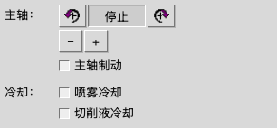
上半部分控制旋转，下半部分是两个独立的冷却开关。
| 画面上的名称 | 操作员用它做什么 | 设计时要表达什么 |
|---|---|---|
| 主轴反转、停止、正转 | 选择旋转方向，或让主轴停止旋转。 | 方向图标成对出现；停止按钮要容易找到。 |
| 转速减小、转速增大 | 降低或提高主轴的转速。 | 加减按钮成对放置，与移动机床的加减按钮保持区域区分。 |
| 主轴制动 | 控制主轴的制动功能。 | 用清楚的开、关状态表达。 |
| 喷雾冷却、切削液冷却 | 分别控制两种冷却方式。 | 两个开关可以分别选择，不能画成只能二选一。 |
截图中“停止”呈按下样式，冷却开关均未勾选。这是演示画面，不是实际机床反馈。
操作员在这里调节加工速度。“倍率”是相对原设定的百分比，速度则带有实际单位。
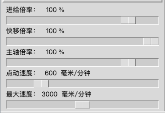
每一组都要保留名称、当前数字、单位和可以拖动的小滑块。
| 名称 | 含义 | 目前显示范围 | 初始显示值 |
|---|---|---|---|
| 进给倍率 | 调整切削时沿刀路前进的速度比例。 | 0–120% | 100% |
| 快移倍率 | 调整非切削快速移动时的速度比例。 | 0–100% | 100% |
| 主轴倍率 | 调整主轴转速的比例。 | 0–120% | 100% |
| 点动速度 | 手动移动所选轴时的速度。 | 0–3000 毫米/分钟 | 600 毫米/分钟 |
| 最大速度 | 速度上限的设置。 | 0–6000 毫米/分钟 | 3000 毫米/分钟 |
百分比和“毫米/分钟”不能混用。例如 100% 表示按原设定运行。每组目前高 42 像素，需画出拖动中、到最小值、到最大值和不能操作时的样子。
操作员可直接输入一条加工指令，也可以从历史记录中取用一条。
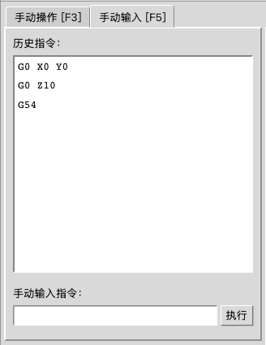
上面是以前输入过的内容；下面的空白框用来输入新指令。
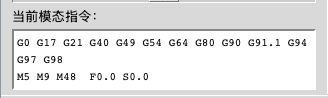
截图中的“当前模态指令”指这一组正在生效的加工方式和参数；作为只读信息显示。
| 画面上的名称 | 操作员用它做什么 | 设计时要表达什么 |
|---|---|---|
| 历史指令 | 点击历史记录，把内容放进下面的输入框。 | 设计普通行、鼠标移上去、选中行和没有记录时的样子。 |
| 手动输入指令、执行 | 输入一条指令，再点击执行。 | 输入框要有清楚的输入位置；执行按钮放在旁边。 |
| 当前模态指令 | 查看当前生效的加工方式和参数。 | 看起来应当是信息展示；内容较长时可以换行。 |
截图里的字母和数字组合是机床指令，需要按原样显示，不要求设计师理解或编写。当前点击“执行”只出现说明窗口，不会让机床动作。
右侧可以看刀具走过的路线，也可以切换成大号的位置数字。
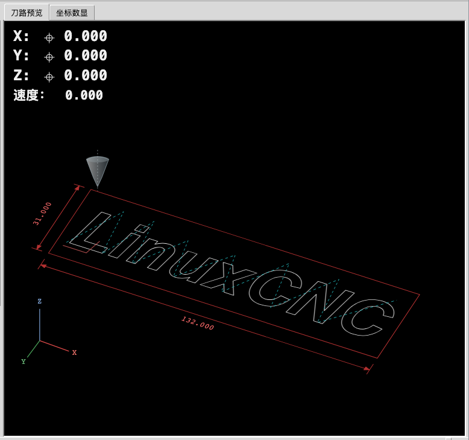
大图显示运动路线，左上角显示位置和速度；图中的英文轮廓只是示例图案，可以替换成其他演示工件。
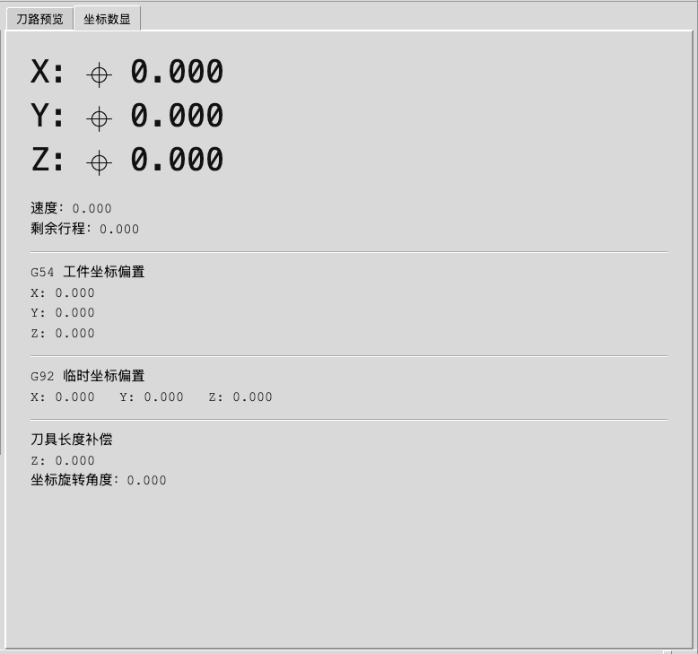
用大号数字看位置，下面列出工件、刀具等位置修正信息。
| 画面上的名称 | 操作员用它做什么 | 设计时要表达什么 |
|---|---|---|
| 刀路预览 | 查看刀具准备怎样移动。 | 用线型、颜色和图例区分切削路线、快速移动路线和范围边框。 |
| 位置数字、速度、剩余行程 | 查看当前位置、移动速度以及当前这段运动还剩多远。 | 数字对齐，小数位和单位清楚；数值变化时尽量不要左右跳动。 |
| 已回零标记 | 表示这一轴是否已找到机床参考位置。 | 已回零和未回零要能区分，不能只靠颜色。 |
| 工件坐标、机床坐标 | 两种不同的位置基准：一个以工件为准，一个以机床为准。 | 明确写出当前使用哪种基准。 |
| 实际位置、指令位置 | 一个是系统反馈的位置，一个是控制指令要求的位置。 | 与位置基准分别显示，避免混为一个开关。 |
| 坐标偏置、刀长补偿 | 用于修正工件安装位置或刀具长度差异的数值。 | 用中文分组名称和对齐的数字列表展示。 |
现有图是演示示意图，位置数字为固定样例。当前预览数字大小为 24 像素，放大后为 34 像素；数显页为 35 像素，放大后为 45 像素。
底部用来阅读加工程序，并持续查看机床和刀具状态。
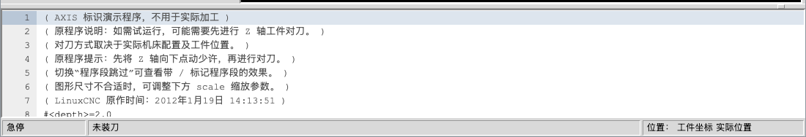
左列是行号，右侧是指令。上边的分隔条可以拖动，调整这一块的高度。
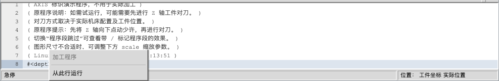
会弹出“从此行运行”。这是在选定位置开始执行程序的入口。
| 画面上的名称 | 操作员用它做什么 | 设计时要表达什么 |
|---|---|---|
| 加工程序 | 按行阅读指令和注释，选择需要查看的行。 | 行号与正文分开；注释、选中行、当前执行行应有区别。 |
| 程序区分隔条 | 向上或向下拖动，扩大或缩小程序阅读区。 | 让人看得出这里能拖动；变大变小后仍能读清文字。 |
| 急停、未装刀 | 显示机床状态和当前刀具信息。 | 状态名称直接可读；急停、运行、暂停、报警等分别设计。 |
| 位置显示方式 | 显示当前位置采用哪种基准、来自哪种位置数据。 | 固定位置显示完整中文，不能只剩一个颜色点。 |
“没有连接机床”表示通信未建立；“急停”表示机床状态。两件事应分开表达。截图里的急停、未装刀及程序文字均为演示内容。
操作员点按钮后出现的小窗口。相同的外框可以共用，里面的标题、字段和内容按用途变化。
每个窗口都包含标题、内容和关闭按钮。当前只有“关闭”，没有真正提交设置的动作。下面展示 9 个代表画面；另存为沿用文件窗口样式，自定义面板沿用说明窗口样式。
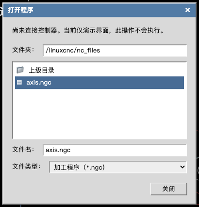
文件夹位置、文件列表、文件名、文件类型。让人清楚知道自己选的是哪个文件。
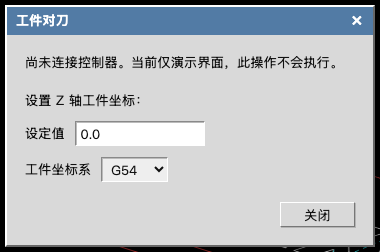
显示当前轴，输入位置值，再选择一组工件位置基准。截图里的字母数字编号表示不同的坐标组。
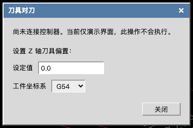
输入刀具的位置修正值。它与工件对刀外形相似，但标题和用途不同。
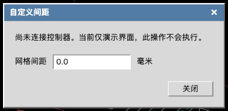
只填写一个数值，右侧保留“毫米”单位。
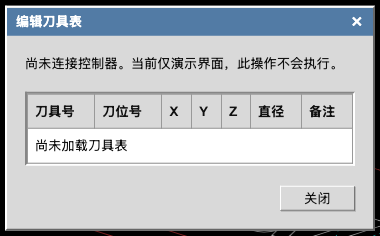
表头保留刀具号、刀位号、各方向修正值、直径和备注；中间说明还没有数据。
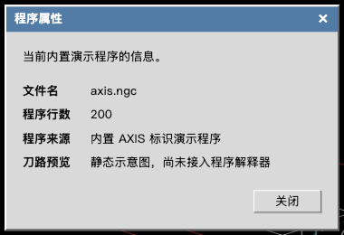
显示文件名、程序行数和来源等信息，供查看。
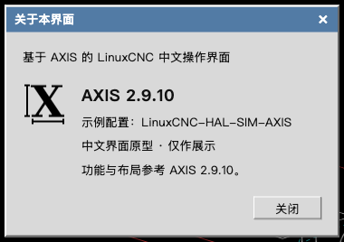
版本、配置和软件名称等资料。截图中的外文名称按原样展示，设计师只需安排图标和信息层级。
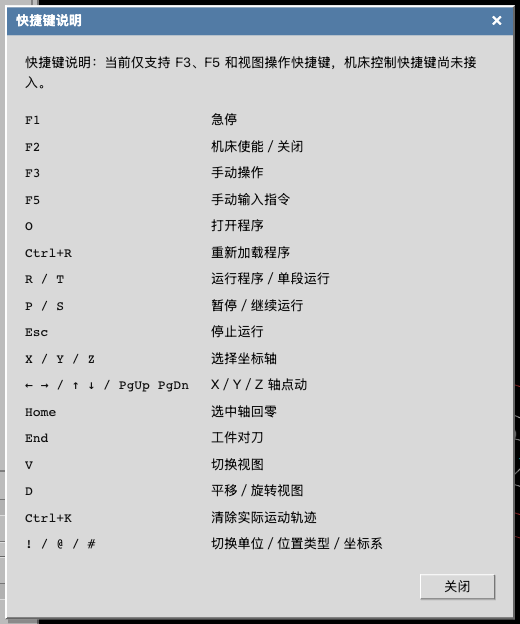
左列是键盘按键，右列是对应功能。按键上的字母保留，功能说明用中文。
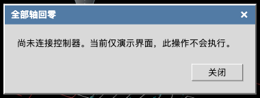
说明原因，并提供关闭按钮。不能用“成功”“已完成”来表达未执行的操作。
设计长文字和内容超出窗口时的样子。窗口要留边距，关闭按钮容易找到。目前宽度至少 370 像素，通常不超过 620 像素，同时要能放进屏幕。
把重复出现的小控件统一设计，再放进上面各个区域。这里的“状态”就是同一个控件在不同操作时的样子。

用文字说明动作，例如“全部回零”。
需要的样子：平时、鼠标移上去、按住、键盘定位、不能点击。
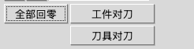
用键盘切换操作位置时，用外框提示目前落在哪个按钮上。
需要的样子：定位在某个按钮时的边框，不与按下状态混淆。
用方向或符号表示动作，鼠标移上去时配中文说明。
需要的样子：平时、鼠标移上去、按下、已选中、不能点击。
像文件夹的标签，点选后切换内容。
需要的样子：当前页和其他页要明显不同。
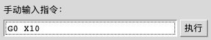
用来填写文字或数字；截图里已填入一条示例指令。
需要的样子：空白、正在输入、只能看不能改、不能输入、内容填错。
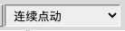
点开后从多个选项里选一个。
需要的样子：收起、展开、选中、不能选择。
一组选项里只能选一个；圆点表示选中。
需要的样子：未选中、已选中、不能选择。
每一项都能独立开关；勾号表示开启。
需要的样子：未勾选、已勾选、不能操作。
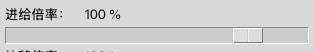
拖动小滑块来改变旁边的数值。
需要的样子：平时、拖动中、最小值、最大值、不能拖动。
一行一个功能；带箭头的行还能展开下一层。
需要的样子：平时、鼠标移上去、已勾选、不能点、下一层展开。
多条信息按行排列，同类内容放在同一列。
需要的样子：普通行、选中行、没有内容、内容多到需要滚动。
容纳说明或设置项，含标题和关闭按钮。
需要的样子：普通内容、长文字、内容滚动、关闭按钮的操作提示。
截图展示目前已有的样子；上面列出的其他状态，需要在新设计中补画。判断能否操作时，还应有文字或符号提示，不能只用颜色区分。